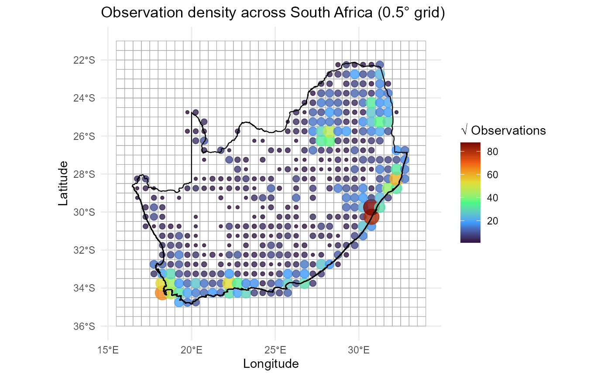
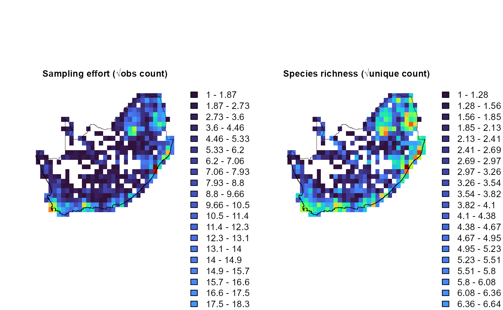

dissmapr
A Novel Framework for Automated Compositional Dissimilarity and Biodiversity Turnover Analysis
1. User-defined area of interest and grid resolution
Defining the geographic extent and an analysis grid early ensures that all subsequent data extraction, aggregation, and visualisation tasks are carried out within a consistent spatial framework. In this vignette we:
- Load the national boundary of South Africa to set our area of interest (AoI).
- Select a working resolution of 0.5° (≈ 55 km) to balance spatial detail with computational cost.
-
Convert the AoI to a
terravector so that raster operations run efficiently. - Create a blank raster template using the chosen resolution and the AoI’s CRS (Coordinate Reference System).
- Populate the raster with placeholder values (here simply 1).
- Mask the raster to the AoI so that only cells whose centroids fall within South Africa remain.
# 1. Load the national boundary
# The shapefile is shipped with the package for full reproducibility.
rsa = sf::st_read(system.file("extdata", "rsa.shp", package = "dissmapr"))
#> Reading layer `rsa' from data source
#> `C:\Users\macfadyen\AppData\Local\R\cache\R\renv\library\dissmapr-ee60f76d\windows\R-4.5\x86_64-w64-mingw32\dissmapr\extdata\rsa.shp'
#> using driver `ESRI Shapefile'
#> Simple feature collection with 1 feature and 1 field
#> Geometry type: POLYGON
#> Dimension: XY
#> Bounding box: xmin: 16.45802 ymin: -34.83514 xmax: 32.89125 ymax: -22.12661
#> Geodetic CRS: WGS 84
# 2. Choose a working resolution
# A 0.5‑degree cell size strikes a balance between computational load and
# the spatial resolution at which national‑level biodiversity patterns remain
# interpretable.
res = 0.5 # decimal degrees° (≈ 55 km at the equator)
# 3. Convert the AoI to a 'terra' vector
# 'terra' supports fast raster operations; converting now avoids repeated
# coercion later.
rsa_vect = terra::vect(rsa)
# 4. Initialise a blank raster template
# The template inherits the AoI’s coordinate reference system (CRS) and is
# discretised into equally‑sized cells according to the resolution chosen.
grid = terra::rast(rsa_vect, resolution = res, crs = terra::crs(rsa_vect))
# 5. Populate the raster with placeholder values
# We simply assign the value 1 to every cell; the values themselves are
# irrelevant at this stage—the grid’s geometry is what matters.
terra::values(grid) = 1
# 6. Clip the raster to the AoI
# Any cells whose centroids fall outside the boundary are set to NA, thereby
# restricting subsequent computations to the AoI only.
grid_masked = terra::mask(grid, rsa_vect)
# grid_masked is now a 0.5° lattice clipped to South Africa and will serve as the common spatial denominator for all downstream summaries.2. Summarise records by grid centroid using
generate_grid()
With the national lattice in place, we can now condense
point-level observations to grid cells using
generate_grid() to:
- Construct a bounding grid: Expands the extent of input points and tessellates it with square cells of the chosen size (here 0.5°).
-
Allocate a
grid_id: Every record inherits the ID of the cell in which it falls. -
Aggregate user-selected columns within each
occupied cell, returning:
-
grid_spp: species counts / abundances.
-
grid_spp_pa: the same matrix recoded to presence (1) / absence (0) for binary dissimilarity metrics.
-
obs_sum: total observations across the aggregated columns.
-
spp_rich: number of columns with a non-zero count (simple species richness).
-
- Compute cell centroids and optional assign mapsheet codes (useful for atlasing projects).
-
Rasterise key layers (
grid_id,obs_sum,spp_rich) for fast map algebra. -
Return four spatial objects ready for further
analysis:
-
grid_r: multi-layerSpatRaster
-
grid_sf: polygon lattice with centroids & summaries
-
grid_spp: abundance table (per cell × species)
-
grid_spp_pa: binary presence/absence table (same dimensions asgrid_spp)
-
Because every observation is now referenced to a regular grid, all downstream statistics and graphics are standardised to the same sample area.
# Generate a 0.5° grid summary for the point dataset `site_spp`
grid_list = dissmapr::generate_grid(
data = site_spp, # point data with x/y + species columns
x_col = "x", # longitude column
y_col = "y", # latitude column
grid_size = 0.5, # cell size in degrees
sum_cols = 4:ncol(site_spp), # columns to aggregate
crs_epsg = 4326 # WGS84
)
# Inspect the returned list
str(grid_list, max.level = 1)
#> List of 4
#> $ grid_r :S4 class 'SpatRaster' [package "terra"]
#> $ grid_sf :Classes 'sf' and 'data.frame': 1110 obs. of 8 variables:
#> ..- attr(*, "sf_column")= chr "geometry"
#> ..- attr(*, "agr")= Factor w/ 3 levels "constant","aggregate",..: NA NA NA NA NA NA NA
#> .. ..- attr(*, "names")= chr [1:7] "centroid_lon" "centroid_lat" "grid_id" "mapsheet" ...
#> $ grid_spp : tibble [415 × 2,874] (S3: tbl_df/tbl/data.frame)
#> $ grid_spp_pa: tibble [415 × 2,874] (S3: tbl_df/tbl/data.frame)
# (Optional) Promote list items to named objects
grid_sf = grid_list$grid_sf # polygons for mapping or joins
grid_spp = grid_list$grid_spp # tabular summary per cell
grid_spp_pa = grid_list$grid_spp_pa # presence/absence summary
# Quick checks
dim(grid_sf); head(grid_sf)
#> [1] 1110 8
#> Simple feature collection with 6 features and 6 fields
#> Active geometry column: geometry
#> Geometry type: POLYGON
#> Dimension: XY
#> Bounding box: xmin: 15.5 ymin: -36 xmax: 18.5 ymax: -35.5
#> Geodetic CRS: WGS 84
#> centroid_lon centroid_lat grid_id mapsheet obs_sum spp_rich
#> 1 15.75 -35.75 1 E015S36BB NA NA
#> 2 16.25 -35.75 2 E016S36BB NA NA
#> 3 16.75 -35.75 3 E016S36BB NA NA
#> 4 17.25 -35.75 4 E017S36BB NA NA
#> 5 17.75 -35.75 5 E017S36BB NA NA
#> 6 18.25 -35.75 6 E018S36BB NA NA
#> geometry centroid
#> 1 POLYGON ((15.5 -36, 16 -36,... POINT (15.75 -35.75)
#> 2 POLYGON ((16 -36, 16.5 -36,... POINT (16.25 -35.75)
#> 3 POLYGON ((16.5 -36, 17 -36,... POINT (16.75 -35.75)
#> 4 POLYGON ((17 -36, 17.5 -36,... POINT (17.25 -35.75)
#> 5 POLYGON ((17.5 -36, 18 -36,... POINT (17.75 -35.75)
#> 6 POLYGON ((18 -36, 18.5 -36,... POINT (18.25 -35.75)
dim(grid_spp); head(grid_spp[, 1:8])
#> [1] 415 2874
#> # A tibble: 6 × 8
#> grid_id centroid_lon centroid_lat mapsheet obs_sum spp_rich
#> <chr> <dbl> <dbl> <chr> <dbl> <dbl>
#> 1 1026 28.8 -22.3 E028S23BB 3 2
#> 2 1027 29.2 -22.3 E029S23BB 41 31
#> 3 1028 29.7 -22.3 E029S23BB 10 10
#> 4 1029 30.3 -22.3 E030S23BB 7 7
#> 5 1030 30.8 -22.3 E030S23BB 6 6
#> 6 1031 31.3 -22.3 E031S23BB 107 76
#> # ℹ 2 more variables: `Mylothris agathina subsp. agathina` <dbl>,
#> # `Pieris brassicae` <dbl>
dim(grid_spp_pa); head(grid_spp_pa[, 1:8])
#> [1] 415 2874
#> # A tibble: 6 × 8
#> grid_id centroid_lon centroid_lat mapsheet obs_sum spp_rich
#> <chr> <dbl> <dbl> <chr> <dbl> <dbl>
#> 1 1026 28.8 -22.3 E028S23BB 3 2
#> 2 1027 29.2 -22.3 E029S23BB 41 31
#> 3 1028 29.7 -22.3 E029S23BB 10 10
#> 4 1029 30.3 -22.3 E030S23BB 7 7
#> 5 1030 30.8 -22.3 E030S23BB 6 6
#> 6 1031 31.3 -22.3 E031S23BB 107 76
#> # ℹ 2 more variables: `Mylothris agathina subsp. agathina` <dbl>,
#> # `Pieris brassicae` <dbl>grid_spp now serves as the site‑level
backbone for modelling (e.g. spatial GLMs) or visualisation
(e.g. dot plots), whereas grid_spp_pa slots directly into
Jaccard- or Sørensen-based beta-diversity workflows.
site_spp retains the raw observation detail for drill‑down
analyses.
3. Visualise observation density across South Africa
With the grid summaries in hand we can now map the spatial
distribution of observation effort. The recipe below layers
three geometric objects in a single ggplot2 call:
-
Grid polygons (
grid_sf): Outlined in semi‑transparent grey to give a subtle sense of the analytical lattice without overwhelming the figure. -
Centroid points (
grid_spp): Plotted using longitude/latitude coordinates and symbol attributes that encode sampling intensity. For example, below size & colour are mapped tosqrt(obs_sum). We usesqrt()because a square‑root transform is often preferable when counts span large orders of magnitude as it compresses large values while still highlighting structure among sparsely sampled cells. -
National border (
rsa): Emphasised in solid black to anchor the map in a familiar outline.
A perceptually uniform Viridis palette
(option = "turbo") supports colour‑blind accessibility,
while theme_minimal() removes visual clutter so the data
can speak for themselves.
ggplot() +
# 1. grid polygons as subtle backdrop
geom_sf(data = grid_sf, fill = NA, colour = "darkgrey", linewidth = 0.2, alpha = 0.5) +
# 2. centroids sized/coloured by sampling effort
geom_point(
data = grid_spp,
aes(x = centroid_lon, y = centroid_lat,
size = sqrt(obs_sum),
colour = sqrt(obs_sum)),
alpha = 0.8
) +
# Divergent colour scale
scale_colour_viridis_c(option = "turbo", name = "√ Observations") +
scale_size_continuous(name = "√ Observations", guide = "none") +
# 3. national outline
geom_sf(data = rsa, fill = NA, colour = "black", linewidth = 0.4) +
theme_minimal() +
labs(
title = "Observation density across South Africa (0.5° grid)",
x = "Longitude", y = "Latitude"
)
4. Visualise sampling effort and richness
generate_grid() also returns a three-layer
SpatRaster (grid_r) whose second and third
bands store cell-level metrics:
-
obs_sum: Total observations aggregated across the chosen species columns (units = observation count) -
spp_rich: Number of species (non-zero columns) recorded in the cell (units = unique species count)
The chunk below extracts those two layers, applies a square-root stretch (to dampen the influence of very large counts), and renders them side-by-side with a perceptually uniform turbo palette.
# 1. Extract & stretch the layers
effRich_r = sqrt(grid_list$grid_r[[c("obs_sum", "spp_rich")]])
# 2. Open a 1×2 layout and plot each layer + outline
old_par = par(mfrow = c(1, 2), # multi‐figure by row: 1 row and 2 columns
mar = c(1, 1, 1, 2)) # margins sizes: bottom (1 lines)|left (1)|top (1)|right (2)
for (i in 1:2) {
plot(effRich_r[[i]],
col = viridisLite::turbo(100),
colNA = NA,
axes = FALSE,
main = c("Sampling effort (√obs count)",
"Species richness (√unique count)")[i],
cex.main = 0.8) # ← smaller title)
plot(terra::vect(rsa), add = TRUE, border = "black", lwd = 0.4)
}
par(old_par) # reset plotting parametersThese maps quickly reveal where sampling effort is concentrated and how species richness varies across the landscape—useful diagnostics before any downstream modelling.